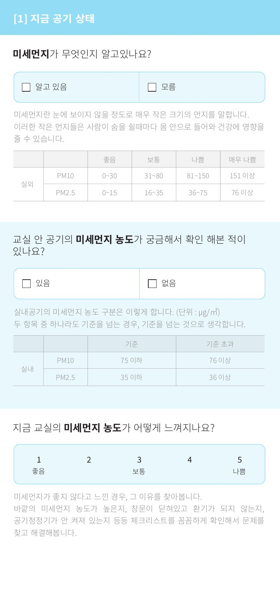
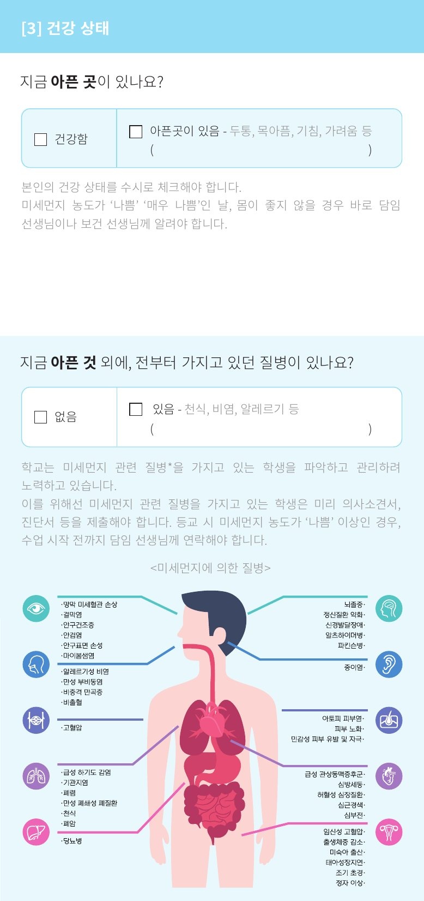
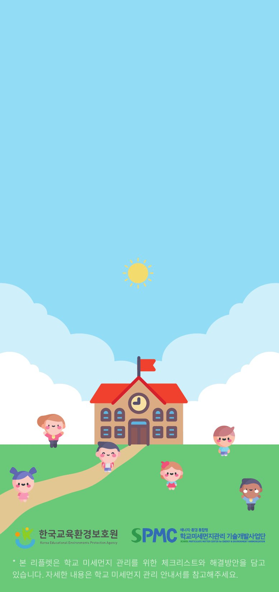
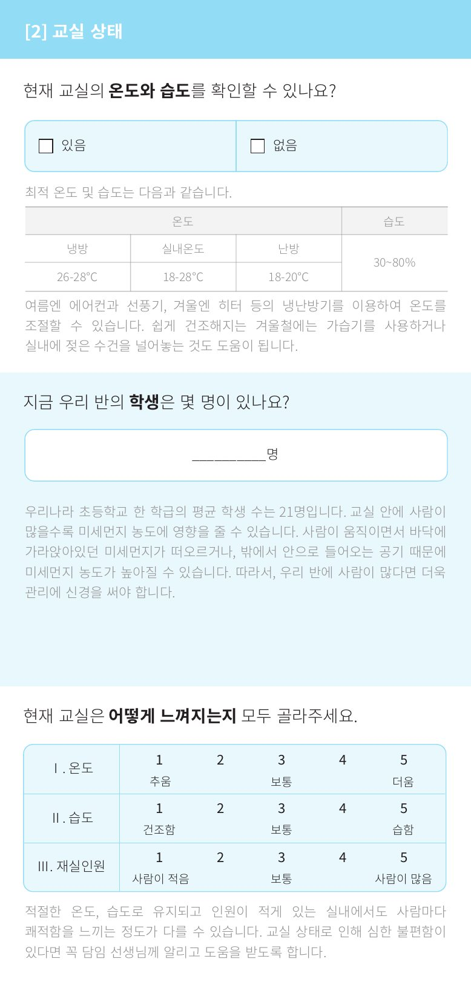
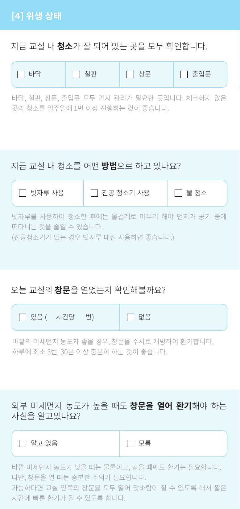
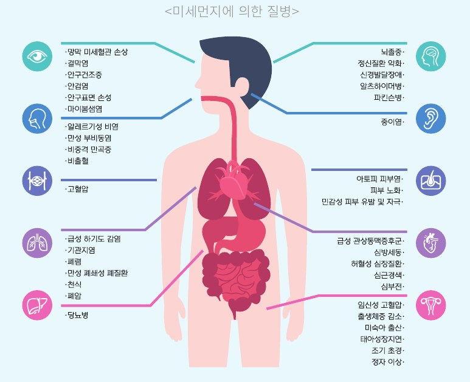
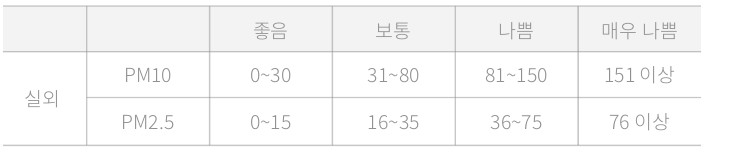
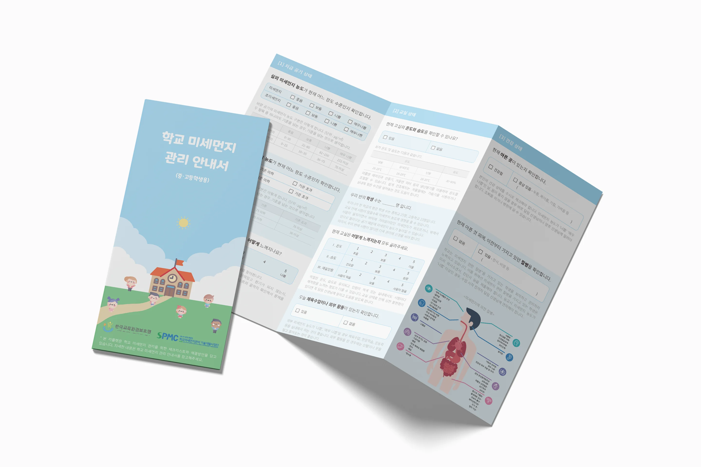
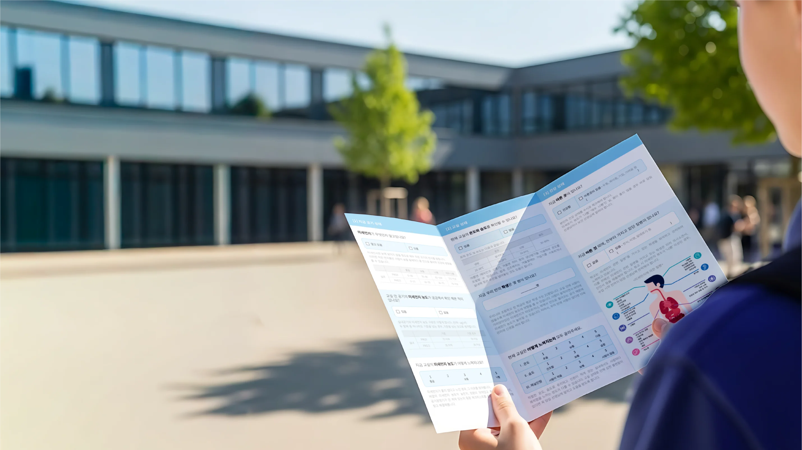

조사 도구이자
관리 안내서
응답자가 문항에 체크하며 교실 상태를 스스로 점검하고, 해결 방안까지 함께 확인하도록 설계한 리플렛입니다. 이를 위해 풀어야 했던 세 가지 과제가 있었습니다.
조사와 안내의 공존
응답 문항과 해결 방안 안내가 한 지면 안에서 서로 방해하지 않아야 했습니다.

딱딱한 정보를 쉽게
미세먼지 기준 수치, 관련 질병 같은 정보를 학생 눈높이에서 부담 없이 전달해야 했습니다.

대상별 3종 운영
초등·중고등·교직원별로 문구는 달라지지만 제작 효율과 시리즈 통일성은 유지해야 했습니다.

관리 안내서(초등학생용)
관리 안내서(초등학생용)
Blue Sky
미세먼지라는 부정적인 주제를 경고 이미지 대신 '미세먼지 없는 깨끗한 학교'라는 지향점으로 풀어, 학생과 교직원 모두 거부감 없이 펼쳐볼 수 있도록 표지를 직접 디자인했습니다.
- 장면하늘·구름·해, 초록 운동장 위의 학교와 아이들
- 시리즈3종 표지를 통일하고 대상 표기만 변경
- 컬러하늘색을 내지 헤더까지 이어 키 컬러로 사용
제작 사양
| 규격 | A4 3단 접지 (예: 297 × 210 mm) |
|---|---|
| 용지 | 스노우지(Snow White) / 150g/㎡ |
| 후가공 | 무코팅 / 오시 2줄 + 3단 접지 |
3D 목업
관리 안내서(초등학생용)


표지
접힌 상태에서는 표지만 보입니다.
[4] 위생 상태 + 내지 [1]
표지를 넘기면 두 면이 먼저 보입니다.
내지 [1]–[3]
공기 → 교실 → 건강 상태로 이어집니다.
외지 전체
뒤집으면 [4] · MEMO · 표지가 이어집니다.
리플렛 구성도
질문 → 응답 → 해결 방안의 3단 모듈을 반복해, 처음 보는 사람도 읽는 순서를 바로 파악할 수 있도록 했습니다.
오늘 교실의 창문을 열었는지 확인해볼까요?
바깥의 미세먼지 농도가 좋을 경우, 창문을 수시로 개방하여 환기합니다.
하루에 최소 3번, 30분 이상 충분히 하는 것이 좋습니다.
질문
문장 속 핵심 키워드만 굵게 강조해 훑어 읽어도 요지가 잡히도록 했습니다.
응답 영역
연하늘색 박스와 체크박스로 '여기에 표시한다'는 행동을 명확히 유도했습니다.
해결 방안 안내
회색의 작은 텍스트로 위계를 낮춰, 응답을 방해하지 않으면서 관리 방법을 전달합니다.
지금 공기 상태
인지도, 실내외 기준표, 체감 5단계 척도
교실 상태
적정 온습도, 학급 인원, 체감 척도
건강 상태
증상·기존 질환 체크, 질병 인포그래픽
위생 상태
청소 위치·방법, 올바른 환기
미세먼지에 의한 질병
신체 부위별 질병을 아이콘과 컬러 라인으로 연결한 인포그래픽

농도 기준표
PM10·PM2.5 실외 기준을 좋음부터 매우 나쁨까지 표로 정리

농도 구분
좋음 · 보통 · 나쁨 · 매우 나쁨
신체 부위 분류
눈, 코, 뇌, 귀, 폐, 심장 등 부위별 아이콘
레이아웃은 그대로, 문구만 바꿔 3종
그리드와 문항 모듈을 공통 템플릿으로 설계해, 대상에 맞게 문구만 교체하는 방식으로 3종을 일관된 품질로 제작했습니다.
초등학생용
지금 우리 반의 학생은 몇 명이 있나요?
우리나라 초등학교 한 학급의 평균 학생 수는 21명입니다. 교실 안에 사람이 많을수록 미세먼지 농도에 영향을 줄 수 있습니다.
중고등학생용
우리 반의 학생 수는 ____명입니다.
우리나라 한 학급의 평균 학생 수는 중학교 25명, 고등학교 23명입니다. 교실 안에 사람이 많을수록 미세먼지 농도에 영향을 줄 수 있습니다.
교직원용
현재 교실 내의 학생 수에 대해 확인합니다.
교실 안에 사람이 많을수록 미세먼지 농도에 영향을 줄 수 있습니다.

